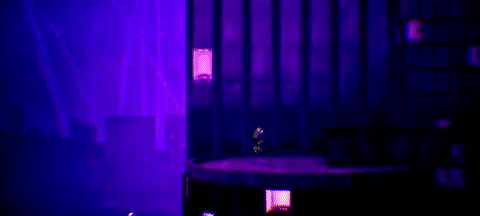
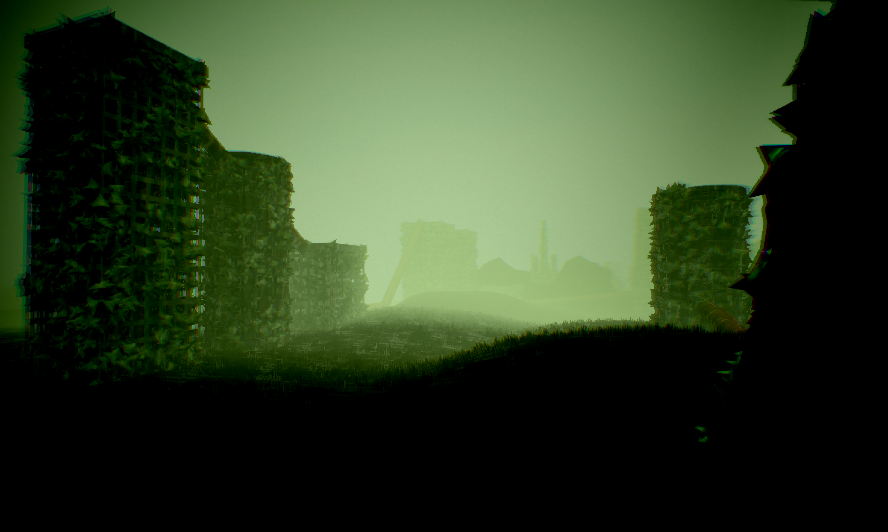
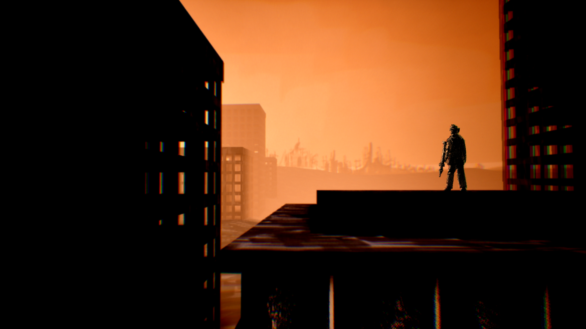

Broken Peaces (lead mechanic/level designer, programmer, writer)
This is the trailer for Broken Peaces, which won 1st place and community choice at UCLA's 2026 Fiat Ludum Game Jam.
Broken Peaces is a game that explores the horrors of nuclear war and won 1st Place at the 2026 UCLA Fiat Ludum Game Jam (as well as Community Choice). As team lead, I collaborated closely with our diverse team, which enhanced not only the development process but also the narrative. In Broken Peaces, you play as three characters across different time periods in Korea, India, and China, reflecting the cultural backgrounds of our team members. The game is voice acted in 3 languages, contains 2D painted cutscenes, and samples real instruments and singing in the music.

Conflict Resolution Through a Unified Vision


I served as the lead programmer, lead mechanic/level designer, and lead writer, but all team members contributed to each area of the game. Before we started development, our team got together and decided on a unified vision: scale. We wanted every part of the game to feel larger. This gave us a framework to solve disagreements when development began. For example, one team member wanted to have players travel inside buildings during gameplay. Together, we made a pros and cons list based on how the mechanic fit with the unified vision. A pro is that going inside buildings makes the world narrative feel bigger, but a con is that it slows down gameplay, which could harm the scale of the levels. Our solution was to have cutscenes that showed important indoor narrative scenes (like a character remembering the death of his mother), which allowed us to keep the pros of the idea while removing the cons.